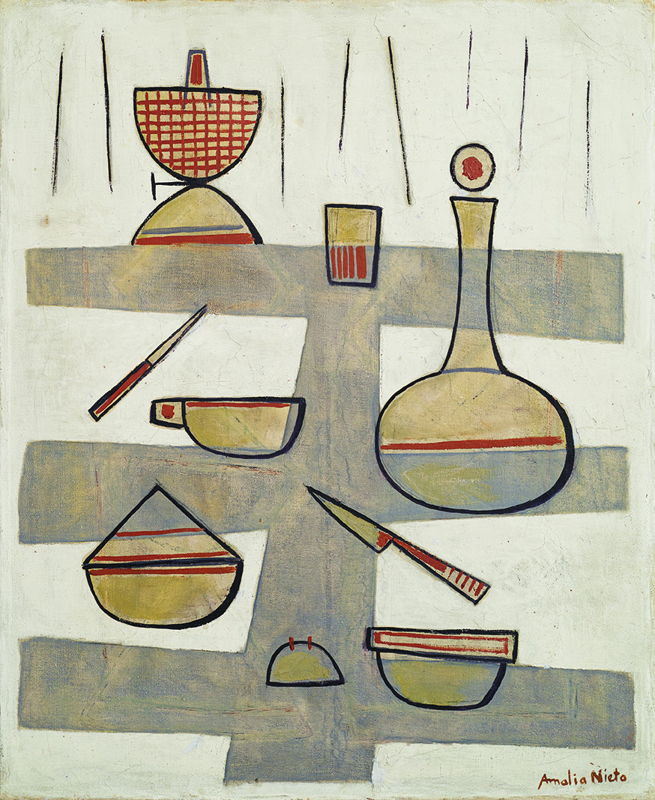
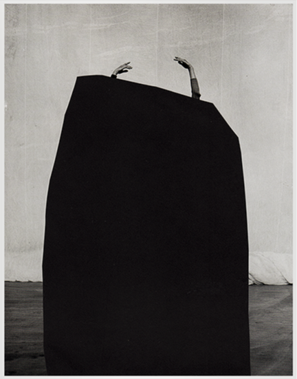

Los estratos de la imagen
Entrevista a Martín Tisnés
- Maldonado
- 08.2020
- 18:50 min
EL LUGAR DEL RECUERDO: SOBRE LA PINTURA DE AMALIA NIETO (1907-2003)
Francisco Álvez Francese
- pintura,
- critica,
- pintura nacional
DISPOSITIVO FISHER #1
EL EXTRAÑO CASO DE MR. CEPPI Y MR.
FIELITZ

Claudio Burguez
- Teoría,
- estética,
- artes visuales

La fisura en la trama
Entrevista a Cecilia De Souza
- Montevideo
- 04.2021
- 19:31 min

El ojo eléctrico
Entrevista a Marcos Medina
- Montevideo
- 04.2021
- 20:22 min